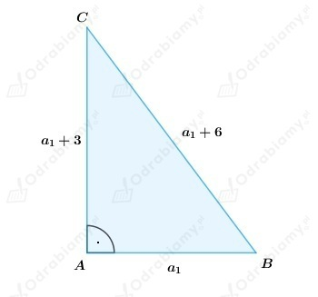
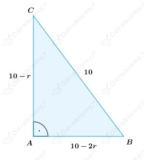
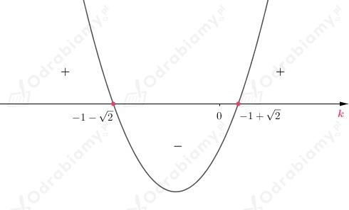
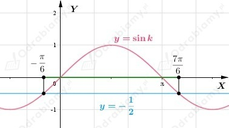
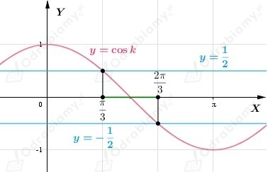

a)
Z treści zadania wiemy, że wykres ciągu (an) jest zawarty w prostej o równaniu
Wobec tego wzór ogólny ciągu możemy zapisać w postaci
Wyznaczamy wartości czterech początkowych wyrazów ciągu (an).
b)
Z treści zadania wiemy, że wykres ciągu (an) jest zawarty w prostej o równaniu
Wobec tego wzór ogólny ciągu możemy zapisać w postaci
Wyznaczamy wartości czterech początkowych wyrazów ciągu (an).
c)
Z treści zadania wiemy, że wykres ciągu (an) jest zawarty w prostej o równaniu
Wobec tego wzór ogólny ciągu możemy zapisać w postaci
Wyznaczamy wartości czterech początkowych wyrazów ciągu (an).
a)
Wiemy, że wykres ciągu arytmetycznego zawiera się w prostej będącej wykresem funkcji liniowej.
Z rysunku odczytujemy, że zaznaczone punkty, to punkty o współrzędnych (1, -1) oraz (5, 1).
Wobec tego wyznaczmy wzór funkcji liniowej, której wykres przechodzi przez zaznaczone punkty.
Wyznaczamy wartość współczynnika kierunkowego prostej
Podstawiamy do równania
współrzędne jednego z punktów, np. punktu (1, -1) i wyznaczamy wartość współczynnika b.
Wnioskujemy, że równanie prostej ma postać
Wobec tego, jeżeli wykres ciągu zawiera się w prostej, to jego wzór ogólny możemy zapisać jako:
Sprawdzamy, które wyrazy ciągu (an) są większe od zera.
Rozwiązujemy nierówność
Zatem wnioskujemy, że
b)
Wiemy, że wykres ciągu arytmetycznego zawiera się w prostej będącej wykresem funkcji liniowej.
Z rysunku odczytujemy, że zaznaczone punkty, to punkty o współrzędnych (3, 3) oraz (5, -1).
Wobec tego wyznaczmy wzór funkcji liniowej, której wykres przechodzi przez zaznaczone punkty.
Wyznaczamy wartość współczynnika kierunkowego prostej
Podstawiamy do równania
współrzędne jednego z punktów, np. punktu (3, 3) i wyznaczamy wartość współczynnika b.
Wnioskujemy, że równanie prostej ma postać
Wobec tego, jeżeli wykres ciągu zawiera się w prostej, to jego wzór ogólny możemy zapisać jako:
Sprawdzamy, które wyrazy ciągu (an) są większe od zera.
Rozwiązujemy nierówność
Zatem wnioskujemy, że
c)
Wiemy, że wykres ciągu arytmetycznego zawiera się w prostej będącej wykresem funkcji liniowej.
Z rysunku odczytujemy, że zaznaczone punkty, to punkty o współrzędnych (2, 2) oraz (6, 1).
Wobec tego wyznaczmy wzór funkcji liniowej, której wykres przechodzi przez zaznaczone punkty.
Wyznaczamy wartość współczynnika kierunkowego prostej
Podstawiamy do równania
współrzędne jednego z punktów, np. punktu (2, 2) i wyznaczamy wartość współczynnika b.
Wnioskujemy, że równanie prostej ma postać
Wobec tego, jeżeli wykres ciągu zawiera się w prostej, to jego wzór ogólny możemy zapisać jako:
Sprawdzamy, które wyrazy ciągu (an) są większe od zera.
Rozwiązujemy nierówność
Zatem wnioskujemy, że
a)
Ciąg (an) jest określony rekurencyjnie:
Wyznaczamy różnicę i określamy jej znak
Zauważamy, że różnica an+1-an jest stała dla każdego n ∈ N+, zatem
ciąg (an) jest ciągiem arytmetycznym.
Różnica an+1-an jest dodatnia, wobec tego ciąg arytmetyczny (an) jest ciągiem rosnącym,
co należało uzasadnić.
Wiemy, że
zatem możemy wyznaczyć wzór ogólny ciągu arytmetycznego (an).
Obliczamy wartość dziesiątego wyrazu ciągu (an).
b)
Ciąg (an) jest określony rekurencyjnie:
Wyznaczamy różnicę i określamy jej znak
Zauważamy, że różnica an+1-an jest stała dla każdego n ∈ N+, zatem
ciąg (an) jest ciągiem arytmetycznym.
Różnica an+1-an jest dodatnia, wobec tego ciąg arytmetyczny (an) jest ciągiem rosnącym,
co należało uzasadnić.
Wiemy, że
zatem możemy wyznaczyć wzór ogólny ciągu arytmetycznego (an).
Obliczamy wartość dziesiątego wyrazu ciągu (an).
a)
Założenia:
Teza:
(an) - ciąg arytmetyczny, czyli różnica an+1 - an jest stała dla każdego n ∈ N+
Dowód:
Możemy zapisać, że:
Wobec tego wzór ciągu (an) zapisujemy w postaci:
Wyznaczamy różnicę:
Różnica an+1 - an jest stała dla każdego n ∈ N+ wobec tego
ciąg (an) jest ciągiem arytmetycznym,
co kończy dowód.
b)
Założenia:
Teza:
(an) - ciąg arytmetyczny, czyli różnica an+1 - an jest stała dla każdego n ∈ N+
Dowód:
Możemy zapisać, że:
Wobec tego wzór ciągu (an) zapisujemy w postaci:
Wyznaczamy różnicę:
Różnica an+1 - an jest stała dla każdego n ∈ N+ wobec tego
ciąg (an) jest ciągiem arytmetycznym,
co kończy dowód.
a)
Przyjmijmy oznaczenia jak na rysunku poniżej

Zakładamy, że
ponieważ są to długości boków trójkąta.
Wobec tego
czyli
Liczby:
są kolejnymi wyrazami ciągu arytmetycznego o różnicy 3.
Korzystając z twierdzenia Pitagorasa możemy wyznaczyć wartość pierwszego wyrazu ciągu.
Wnioskujemy, że trójkąt ma boki długości:
Wyznaczamy obwód trójkąta:
b)
Przyjmijmy oznaczenia jak na rysunku poniżej

Zakładamy, że
ponieważ są to długości boków trójkąta.
Wobec tego
czyli
Liczby:
są kolejnymi wyrazami ciągu arytmetycznego o różnicy r.
Korzystając z twierdzenia Pitagorasa możemy wyznaczyć wartość różnicy ciągu.
Wnioskujemy, że trójkąt ma boki długości:
zatem przyprostokątne mają długości: 6 i 8.
a)
Dowodzimy wynikanie w obie strony.
1.
Niech
będą długościami boków trójkąta prostokątnego, które
tworzą ciąg arytmetyczny.
Najdłuższy bok trójkąta prostokątnego jest jego przeciwprostokątną.
Z twierdzenia Pitagorasa dostajemy:
Wobec tego długości boków trójkąta są równe:
Zatem trójkąt o podanych wyżej długościach boków jest podobny do trójkąta
o bokach długości 3, 4, 5 na podstawie cechy bok-bok-bok w skali
co kończy dowód.
2.
Niech
będą długościami boków trójkąta prostokątnego podobnego do trójkąta
o bokach długości 3, 4, 5.
Zauważamy, że
czyli trójkąt o bokach długości 3r, 4r, 5r jest trójkątem prostokątnym
oraz różnica pomiędzy kolejnymi bokami trójkąta jest taka sama:
wobec tego długości boków trójkąta
tworzą ciąg arytmetyczny,
co kończy dowód.
b)
Niech
będą długościami boków trójkąta prostokątnego tworzącymi ciąg arytmetyczny.
Wiemy, że
Korzystając z udowodnionej własności w podpunkcie a) możemy zapisać, że
długości boków trójkąta są równe:
więc
Wobec tego długości boków trójkąta mają miary:
Zatem pole trójkąta:
a)
Sprawdzamy, dla jakich wartości parametru k ciąg (an) jest arytmetyczny i malejący.
Czyli różnica
musi być stała i mniejsza od 0 dla każdego n ∈ N+.
Wobec tego wyznaczamy wartość różnicy
Zauważamy, że ciąg (an) jest ciągiem arytmetycznym dla dowolnego k ∈ R.
Sprawdźmy, dla jakiego k ciąg (an) jest malejący
Wyznaczamy miejsca zerowe funkcji kwadratowej

Odczytujemy zbiór rozwiązań nierówności
Wobec tego dla
ciąg (an) jest ciągiem arytmetycznym i malejącym.
b)
Sprawdzamy, dla jakich wartości parametru k ciąg (an) jest arytmetyczny i malejący.
Pamiętamy, że ciąg (an) jest ciągiem arytmetycznym, jeśli jego wykres zawiera się w prostej.
Wobec tego, aby równanie
było równaniem prostej, to:
wtedy:
Aby ciąg (an) był malejący, to
Wobec tego ciąg (an) jest ciągiem arytmetycznym i malejącym, gdy
spełnione są jednocześnie warunki:
Wnioskujemy, że dla k=-1 ciąg (an) jest ciągiem arytmetycznym i malejącym.
a)
Sprawdzamy, dla jakich wartości parametru k ciąg (an) jest arytmetyczny i rosnący.
Wykres ciągu (an) zawiera się w prostej
wobec tego ciąg (an) jest ciągiem arytmetycznym.
Ciąg (an) jest rosnący, gdy

Z wykresu funkcji trygonometrycznej sinus i tabelki wartości odczytujemy, że
Wnioskujemy, że ciąg (an) jest arytmetyczny i rosnący, gdy
b)
Sprawdzamy, dla jakich wartości parametru k ciąg (an) jest arytmetyczny i rosnący.
Wykres ciągu (an) zawiera się w prostej
wobec tego ciąg (an) jest ciągiem arytmetycznym.
Ciąg (an) jest rosnący, gdy

Z wykresu funkcji trygonometrycznej cosinus i tabelki wartości odczytujemy, że
Wnioskujemy, że ciąg (an) jest arytmetyczny i rosnący, gdy